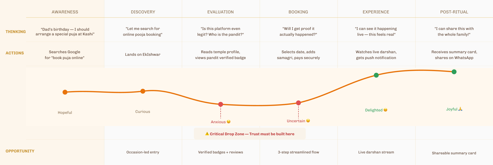

Designing a seamless bridge between devotion and digital — making sacred access effortless for every devotee.
Lead Product Designer
Web + Mobile (Responsive)
Spiritual Tech / FaithTech
4 Months
Figma, Maze, Hotjar
01 — Context
What is EkIshwar?
India has over 2 million temples. Most of them have no digital presence. Devotees who live away from their home towns — or who simply cannot travel — have no reliable way to participate in rituals that carry deep cultural and emotional significance. EkIshwar set out to solve that.
At its core, EkIshwar is a digital devotion platform — a marketplace and booking engine where users can schedule poojas, book darshans (both in-person and live-streamed), and connect with verified priests and temples across India. Think of it as the intersection of faith and fintech, but designed with cultural sensitivity at the forefront.
"The challenge wasn't building another booking app. It was earning trust in a space where faith is deeply personal and any misstep feels like a violation."
My role was to lead end-to-end UX — from initial discovery and user research through to final interaction design, handoff, and design system documentation.
02 — Problem
A faith gap in the digital age
When we started, the team had a high-level idea: "book poojas online." But before touching Figma, I wanted to understand why this was broken in the first place — and whether users actually wanted a digital fix at all.
Research Approach
I conducted a mix of contextual interviews (12 participants), a survey (143 responses), and competitive analysis across 5 existing players in the space — including JioCinema's Aarti features, Isha Foundation's online offerings, and smaller temple-specific booking portals.
Key Research Findings
68% of users had attempted to book a pooja online before — and 71% of those reported abandoning because the process felt untrustworthy or confusing.
Users in Tier 2/3 cities and the diaspora diaspora were the most frustrated — they wanted access but found existing platforms either too regional or too "corporate" in tone.
The biggest emotional barrier wasn't technology — it was doubt: "Will the pooja actually happen?" "Is this a legit pandit?"
91% of users said they would use a digital platform if it offered live confirmation, a receipt, and proof of the ritual.
Existing apps treated it like an e-commerce transaction. Users wanted it to feel more like a sacred service.
🔒
Trust Deficit
No verification signals. No live proof. Users had no way to confirm the ritual had taken place.
🗺️
Discovery Friction
Finding the right pooja for the right occasion across the right temple was overwhelming and fragmented.
📵
Zero Personalisation
Generic UIs that didn't speak the language of devotion — visually, tonally, or functionally.
🌐
Accessibility Gap
No real virtual/live-stream path for non-local devotees or those with physical limitations.
Problem Statement
"Devotees living away from their home temples lack a trustworthy, culturally sensitive digital platform to book and experience spiritual services — leading to missed rituals, anxiety, and disconnection from faith."
03 — Process
How I approached the design
I worked within a double diamond framework, but I want to be transparent — it was never linear. We looped back multiple times, especially after early usability testing revealed assumptions that needed unravelling.
User Persona — Primary
🙏
Priya Sharma
34 · IT Professional · Bangalore (Originally Varanasi) · Mid-income
"I want to send prayers home on important dates, but I can't always travel. I just need to know it actually happened."
Book rituals for family occasions
Stay spiritually connected remotely
Trust that the service is real
Can't verify legitimacy online
Platforms feel transactional
No native language support
📿
Ramesh Iyer
58 · Retired Teacher · Chennai · Fixed income, moderate digital literacy
"My knees don't let me go to the temple every week. I want to watch the morning aarti live from home."
Daily spiritual routine digitally
Easy access to live darshans
Simple, not overwhelming UI
Too many steps to find aartis
Small fonts, cluttered screens
Payment anxiety on new apps
Design Process
Phase 01
Discovery & Empathy Mapping
12 contextual interviews, survey of 143 devotees across 3 age groups. I built empathy maps for each persona and ran a competitive teardown to identify what existing players were missing — not just in features, but in tone and trust.
Phase 02
Define — HMW & User Journey Mapping
I mapped the end-to-end "Book a Pooja" journey and highlighted the emotional highs and lows. The biggest drop-off was not at payment — it was at the moment users asked themselves "is this real?" I turned that into our central design challenge.
Phase 03
Ideation & Concept Sketching
Ran a 2-day design sprint with the product team. We explored 3 distinct directions — "Marketplace First," "Temple-Centric Browse," and "Occasion-Led Discovery." User tests pointed clearly to Occasion-Led as the most intuitive entry point.
Phase 04
Lo-Fi Prototyping → Mid-Fi Testing
Built paper wireframes first, then a Figma prototype. Ran 2 rounds of moderated usability testing (8 users each). The biggest revision: we removed a 5-step booking form and replaced it with a 3-step contextual flow — significantly reducing cognitive load.
Phase 05
Hi-Fi Design & Design System
Finalised the UI with a custom design system built around a warm, saffron-led palette, Devanagari-compatible typography, and a set of trust-signal components. Delivered a component library and handoff specs via Figma to the dev team.
Phase 06
Post-Launch Monitoring & Iterations
Used Hotjar heatmaps and session recordings for 3 weeks post-launch. Identified and resolved a key friction point on mobile — the date picker for pooja scheduling — in a fast-follow iteration sprint.
A Key Design Decision — Occasion-Led Discovery
Instead of "Browse by temple" or "Browse by pooja type," we led with occasions — Birthdays, Anniversaries, Shraddha, Griha Pravesh, etc.
This reduced decision fatigue and made the platform feel contextually relevant, not catalogue-like.
It also unlocked a natural upsell path — once a user selects an occasion, we could recommend complementary rituals.
03a — Research Artifacts
Journey Map & Early Wireframes
Before any pixels, I mapped the emotional journey and roughed out the flow in lo-fi. These two artifacts drove most of the critical decisions — especially where we introduced trust signals.
User Journey Map — "Book a Pooja Remotely"

Lo-Fi Wireframes — Before & After
Two key flows tested in round 1. Left shows the original service-browsing entry; right shows the occasion-led redesign that emerged from testing.
04 — Solution
What we built
The final design centered around three pillars: Trust by Design, Occasion-Led Flow, and Live Devotion Access. Every feature decision was traced back to a user insight.
📅
Occasion-Led Booking
Enter your occasion first. The platform surfaces relevant poojas, temples, and priests automatically — no browsing required.
✅
Trust Signals Throughout
Verified badges on temples and priests, live video confirmation post-pooja, and a digital prasad dispatch option.
📺
Live & Virtual Darshan
Users can join a real-time livestream of their booked pooja. A dedicated watch screen with fullscreen, mute, and sharable link.
📋
Ritual Summary Card
Post-ritual, users receive a beautifully designed summary: pandit name, temple, time, mantras chanted, and a photo — shareable with family.
🛕
Temple Profiles
Rich temple pages with history, photos, active live schedules, and user reviews — building emotional context before booking.
🌐
Multilingual Support
Hindi, Tamil, Telugu, Marathi content and UI strings — reducing friction for users less comfortable in English.
The Trust Architecture
This was my most deliberate design investment. Trust wasn't an afterthought — it was structural. I built a "trust layer" into the booking flow with three moments:
🔍
Before Booking
Verified temple and pandit badges, user ratings, real photos, and listed ritual steps so users know what they're paying for.
🔔
During the Ritual
Real-time push notification when the pooja starts. A live video link. A "ritual in progress" status indicator on the home screen.
📩
After Completion
Ritual summary card with photo proof. Priest's personalised note. Option to leave a review and book again for next year with one tap.
"We designed for the moment someone's mother asks 'Did the pooja happen?' — and made sure the answer was beautiful, instant, and shareable."
04a — Hi-Fi Screens
Final UI — Key Screens
Four screens that together define the EkIshwar experience — from the moment a user lands to the moment they share proof of the ritual with their family.
1
Contextual Greeting
The app recognises upcoming occasions and surfaces them front-and-centre — making the first tap feel intentional.
2
3-Step Booking
Reduced from 5 steps to 3 after usability testing. Occasion → Pandit → Date/Time. Each step is self-contained.
3
Verification Badges
Every pandit and temple carries a verified badge — the single highest-impact trust signal from our research.
4
Live Darshan View
Immersive full-screen experience with real-time viewer count, dakshina offering, and a shareable live link.
The Ritual Summary Card
Sent automatically post-pooja. Designed to be beautiful enough to share — family members were posting these on WhatsApp and Instagram, which became our strongest organic growth loop.
Ritual Summary Card
5
Dark, Ceremonial Aesthetic
The card uses the temple's atmospheric dark palette — intentionally designed to feel sacred, not like a receipt.
6
Personalised Pandit Note
Handwritten-style blessing from the pandit makes the card emotionally resonant and deeply personal.
7
WhatsApp-First Sharing
The primary CTA is WhatsApp share — the format and aspect ratio were designed specifically to look beautiful in a WhatsApp forward.
8
One-Tap Rebook
"Book Again for Next Year" pre-fills all details from this ritual — our highest-performing retention feature.
04b — Design System
Foundations — Color, Type & Components
A custom design system built to carry cultural weight without feeling heavy. Every decision — from the saffron primary to the Devanagari-safe typeface — was rooted in the sacred visual language of Indian temples.
Color Palette
Typography
Key Components
Design system note: The system was built with ~42 base components, 6 spacing tokens, and 3 elevation levels. I kept the system deliberately lean — the goal was consistency, not comprehensiveness. Every component had a documented intent (not just appearance) to help the dev team make judgment calls without needing a designer in every PR review.
05 — Impact
Measuring what mattered
We tracked both quantitative metrics and qualitative signals. The numbers told one story — the user reviews told a richer one.
62%Reduction in booking abandonment rate
4.6★Average app store rating within 90 days
3×Increase in repeat bookings within the first quarter
📈
Task Completion
Booking completion rate went from 34% to 71% after the occasion-led flow was introduced in testing.
⏱️
Time to Book
Average time to complete a pooja booking dropped from 9.2 min to 3.8 min post-redesign.
💬
User Sentiment
"It actually feels like they care about the ritual, not just the transaction" — recurring theme in post-launch reviews.
Qualitative Wins
Multiple users from the diaspora (UK, US, UAE) wrote in saying this was the first time they felt "truly connected" during a family pooja back home.
Temple admins reported a 40% reduction in inbound phone calls — users were self-serving their bookings and queries via the app.
The Ritual Summary Card became a share-worthy moment — users were sharing them on WhatsApp and Instagram, organically growing the platform.
06 — Reflection
What I'd do differently
Every project teaches you something you couldn't have known at the start. Here's what I'd carry forward — and what I'd fix.
Involve temple admins earlier in the process
We focused heavily on devotees in research and underweighted the supply side — the temples and priests. Mid-project, we learned that several pain points (like scheduling conflicts and cancellation flows) were rooted in how the platform worked for admins, not users. Earlier supply-side research would have saved us a sprint.
Push back harder on scope in the first version
We shipped multilingual support and virtual darshan simultaneously. In hindsight, launching with one solid language and iterating would have let us validate the core loop faster before expanding. The quality of the virtual experience suffered slightly from the compressed timeline.
Build accessibility into the design system from day one
Ramesh's persona (older, lower digital literacy) pointed to real needs around font sizing, contrast, and tap targets. We addressed it, but reactively. A dedicated accessibility audit early in the hi-fi phase would have been more rigorous.
The emotional layer was the right bet
Every time we debated whether to invest in something like the Ritual Summary Card — which felt "nice to have" — the user research validated it as a trust and retention driver. Trusting the research when the team was skeptical was the right call, and it shaped how I approach advocating for UX decisions now.
"Designing for faith taught me that trust is not a feature you add — it's an architectural decision you make at the beginning or spend the rest of the project retrofitting."
EkIshwar remains one of the most culturally complex products I've worked on — and the one I'm most proud of. It forced me to design beyond the screen, considering ritual, emotion, and community in ways that a typical productivity or commerce app never demands.